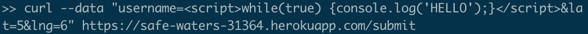
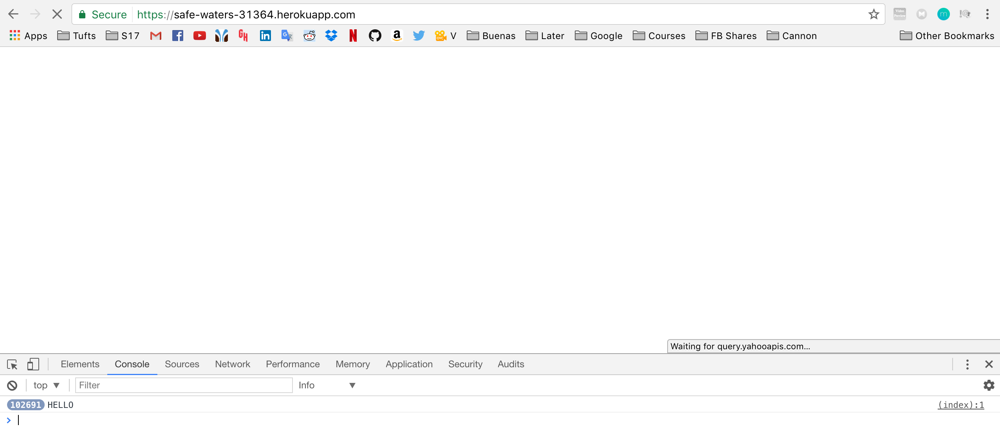
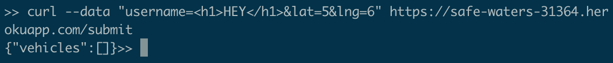
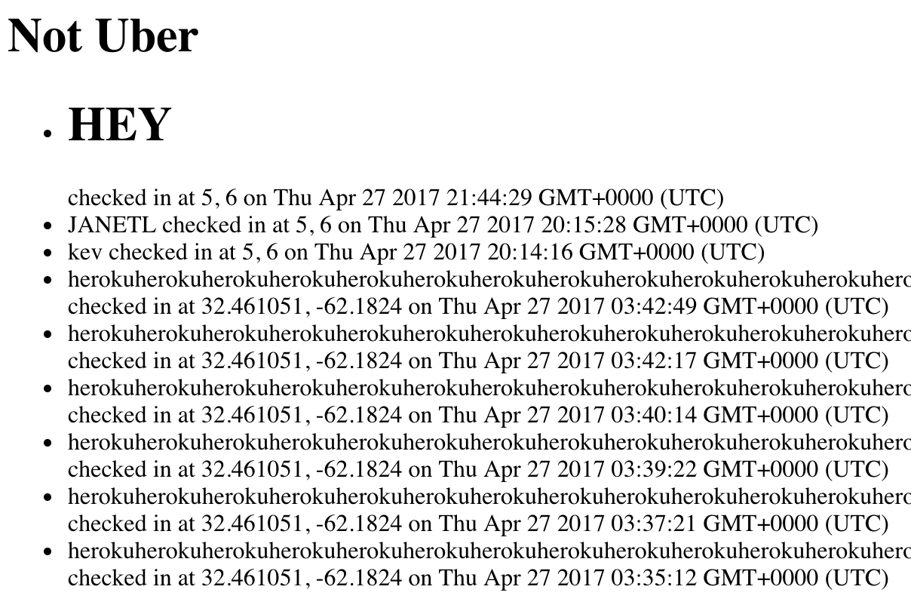
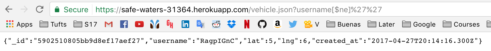

In the last project, we were instructed to implement the server side of the Black Car service, which, similarly to Uber, allows passengers and drivers to locate each other, using the Google Maps API. In this assignment, I will identify security problems in my partner Paul Vetter's implementation, and suggest potential solutions.
Using curl in the command line, I tested sending different data through Mr. Vetter's POST (/submit) method, specifically in the username value field. I also used this URL (https://safe-waters-31364.herokuapp.com/vehicle.json?username[$ne]%27%27) on my Google Chrome browser to access the database.
Since Mr. Vetter's code does not check that the entered username has no special characters (characters that are not letters of the alphabet), users can submit invalid data, such as code that can modify the website in unsafe ways.
Another issue in his application is that through a specific URL, anyone can access data in the database that should not be accessible to the public, which can have security implications: anyone can know where everyone else is and when they were there!
Mr. Vetter's application, as previously stated, does not check for special characters in the username value field of his /submit POST method. This is highly severe, as one can submit any scripts and the application will run them without checking. This is dangerous because a script could redirect the application to a malicious site, or do things like an infinite loop, which can even overheat the computer of whomever leaves the application open for an extended amount of time, potentially even damaging the hardware. This is how I found the issue:
Command:

Application after the command:

Note the infinite loop in the developer tools. Unless one quits the application, this can go forever. The application does not even load the data!
Recommendation: make sure the username value has no special characters before entering it to the database.
Similarly to the previous issue, because of the fact that Mr. Vetter's application does not check for special characters in the username value field of his /submit POST method, one can also submit HTML code that will load when the application runs. This issue has a medium severity in my opinion: anyone can post anything to the application, such as malicious content! Thus, this has to be avoided at all costs. This is how I found the issue:
Command:

Application after the command:

I posted something harmless, but anyone could post anything through this command, such as malicious multimedia.
Recommendation: make sure the username value has no special characters before entering it to the database.
By typing a URL like the one in the following example, anyone has access to the database of all vehicles!

This is a flaw with the vehicle.json GET method. As this article explains, one can avoid this issue by checking that the request's parameters are correctly formatted and typed.
As previously mentioned, these issues can be avoided by handling invalid data (no special characters in any value field such as the username), and making sure that the request's parameters are correctly formatted and typed. Otherwise, this application is vulnerable to malicious use that can affect anyone who uses it!
https://blog.sqreen.io/prevent-nosql-injections-mongodb-node-js/